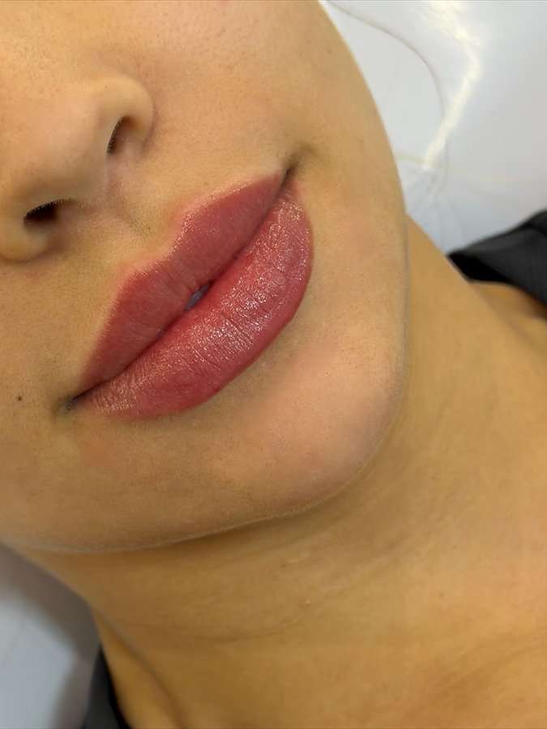
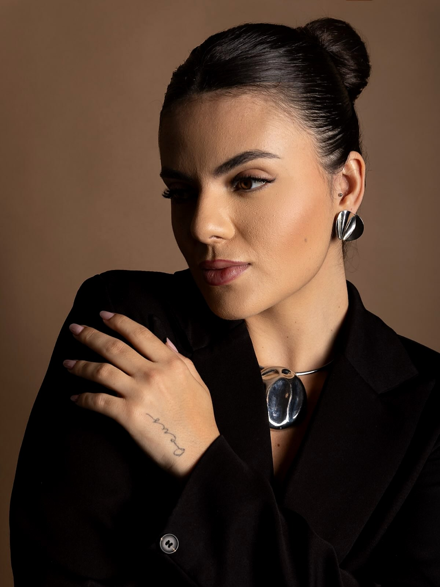

Paleta quiet luxury
Acessibilidade: o taupe do briefing (#8A7A72) foi escurecido para #76665E para passar no WCAG AA. Rosé e champagne não são usados em texto pequeno sobre fundo claro; no hover do botão, o texto passa a café sobre rosé (5.6:1).
Serifa editorial
Apaixone-se por si.
Display · Cormorant Garamond 300 · 52–80px · −0.02em
Título de seção em itálico
H2 · Cormorant Garamond 400 · 38–60px
Título de card
H3 · Cormorant Garamond 400 · 26–32px
“Biomédica esteta e completamente apaixonada pelo que faço.”
Citação · Cormorant itálico 300 · 24–36px · fio champagne
Rótulo · Inter 500 · 12px · 0.15em
Corpo de texto em Inter, 16–18px, entrelinha 1.7 e no máximo 65 caracteres por linha, para leitura confortável no celular e no computador.
Corpo · Inter 400 · 16–18px · 1.7
Camila Fagundes
Assinatura · Allura
Respiro generoso
Grid de 12 colunas · largura máxima 1200px · margens 20–48px · cantos 28px (fotos e cards) e 16px (elementos menores).
Componentes
Pílula · 52px de altura · 32px de padding lateral · caixa alta 0.15em · seta fina desliza 5px no hover.
Card de procedimento

Lábios
No hover, a foto aproxima levemente e surge a borda champagne.
AgendarÍcones de traço 1.5px · café (funcionais) ou champagne (decorativos).

Monograma CF · foto em arco (topo arredondado, base 28px).